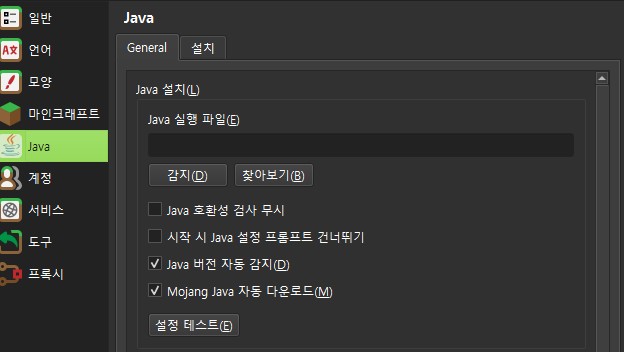

접속하는 방법
-
Prism Launcher 설치하고 로그인하기
- 공식 다운로드 페이지에서 사용하는 운영체제에 맞는 Prism Launcher를 내려받아 설치합니다.
- 런처를 열고 오른쪽 위 계정 관리에서 정품 마인크래프트 자바 에디션 계정으로 로그인합니다.
- 정품 계정이 있어야 서버에 들어올 수 있습니다.
-
자바 25 준비하기
- 이 모드팩은 Java 25가 필요합니다. 이전 버전의 자바로는 실행되지 않습니다.
- Java 25가 이미 설치되어 있고 Prism Launcher가 그 자바를 선택하고 있다면 다시 설치할 필요가 없습니다. 다음 단계로 넘어가세요.
- 설치되어 있지 않거나 선택되지 않았다면, Prism Launcher 9.0 이상에서 Settings (설정) → Java를 열고
Autodetect Java version (자바 버전 자동 감지)과Auto-download Mojang Java (Mojang Java 자동 다운로드)를 체크합니다. 필요한 자바를 런처가 자동으로 내려받습니다.
Prism Launcher 설정 → Java 탭: 두 자동 항목을 체크한 모습 - 자동으로 받을 수 없거나 자바 관련 오류가 나오면, Java 25를 직접 설치한 뒤 인스턴스를 오른쪽 클릭 → Edit → Settings → Java에서 Java 25를 선택합니다.
-
모드팩 파일 가져오기
- 맨 위의 모드팩 다운로드 버튼으로
.mrpack파일을 받습니다. - 압축을 풀지 마세요. 받은 파일을 그대로 사용합니다.
- Prism Launcher에서 Add Instance(인스턴스 추가) → Import from zip(불러오기) 탭을 엽니다.
- 내려받은
.mrpack파일을 선택하고 가져오기를 끝냅니다. - 이전에 만든 인스턴스에 덮어쓰지 말고 새 인스턴스로 만듭니다.
가져오기가 끝나면 마인크래프트 26.3, NeoForge 26.3.0.8-beta, 모드 19개와 셰이더 팩, 리소스팩 3개가 함께 설치됩니다. 모드 대부분과 셰이더 팩, 일부 리소스팩은 런처가 내려받으므로 인터넷 연결이 필요합니다. 새 인스턴스는 게임 언어가 한국어로 시작합니다.
이전 모드팩을 쓰던 분: 1.1.8은 1.1.7에서 책 모드 Modonomicon만 2.7.0으로 바꿔, Occultism의 Dictionary of Spirits 같은 책의 항목 지도를 마우스 왼쪽 버튼으로 끌어 움직이지 못하던 문제의 수정을 담았습니다. 서버도 같은 판으로 바꾸므로 1.1.8을 새 인스턴스로 가져와 주세요. 1.1.5 이하로 만든 인스턴스는 무덤 모드 Simple Tomb이 없어 서버에 접속할 수 없습니다.
- 맨 위의 모드팩 다운로드 버튼으로
-
서버 접속하기
- 가져온 인스턴스를 선택하고 실행합니다. 첫 실행은 파일을 내려받느라 오래 걸릴 수 있습니다.
- 게임이 열리면 Multiplayer(멀티플레이)를 누릅니다.
- 1.1.5 이후 모드팩으로 새로 만든 인스턴스에는 목록에 Aziran(
mc.aziran.uk) 서버가 이미 들어 있습니다. 이 서버를 눌러 접속합니다.
목록에 서버가 없다면(이전에 만든 인스턴스 등) Add Server(서버 추가)를 누르고 서버 주소 칸에
mc.aziran.uk를 입력한 뒤 완료를 누르세요.
접속한 다음 할 일
Occultism
서버에 들어왔다면 오컬트 마법 모드 Occultism을 시작해 보세요. 첫 재료를 얻는 법과 안내서 만드는 법을 정리했습니다.
Occultism 시작 가이드 보기알아 두면 편한 명령어
명령어
집 저장과 이동, 친구에게 보내는 순간이동 요청과 되돌아가기, 스폰 복귀까지 자주 쓰는 명령어를 한곳에 모았습니다.
명령어 안내 열어 보기셰이더와 지도
셰이더는 처음에 꺼져 있습니다. 켜려면 게임에서 Options(설정) → Video Settings(비디오 설정) →
Shader Packs...를 누르고 ComplementaryReimagined_r5.9.3을 골라 Apply(적용) 후 Done(완료)을 누릅니다.
끄려면 같은 화면에서 OFF를 고릅니다. 셰이더는 그래픽 부하가 크니 프레임이 낮으면 끄세요.
미니맵은 JourneyMap입니다. 게임에 들어가면 화면 구석에 미니맵이 보이고, 전체 지도는 기본 단축키 J로 엽니다.
JourneyMap과 셰이더 팩은 라이선스상 모드팩 파일에 담을 수 없어서, .mrpack을 가져올 때 런처가 Modrinth에서 직접 내려받습니다.
한국어 번역과 리소스팩
새로 가져온 인스턴스는 게임 언어가 한국어이고, Occultism 한국어 번역 팩만 켜진 상태로 시작합니다. 나머지 두 리소스팩은 설치만 되어 있고 꺼져 있습니다. 원할 때 직접 켜세요.
- Occultism 한국어 번역 켜짐
- Occultism 모드의 아이템 이름과 안내서 전체를 이 서버에서 새로 번역했습니다. 게임 언어가 한국어일 때 보입니다.
- Stay True 꺼짐
- 바닐라 느낌을 살린 텍스처 팩입니다. 1.21.5용이라 26.3에서 제대로 보이는지는 확인하지 않았고, 게임이 이전 버전용 팩이라고 경고합니다. 연결 텍스처 같은 일부 표현은 OptiFine이 있어야 해서 이 모드팩에서는 적용되지 않습니다.
- Vanilla Experience+ 꺼짐
- 바닐라 스타일을 다듬고 고치는 리소스팩으로 26.3을 지원합니다. 모드팩 가져오기 중에 런처가 Modrinth에서 받습니다. 몹 변형 텍스처는 별도 모드가 있어야 보입니다.
켜고 끄는 법
- 게임에서 Options(설정) → Resource Packs...(리소스팩)을 엽니다.
- 켜려면 왼쪽 Available(사용 가능) 목록에서 팩의 화살표를 눌러 오른쪽 Selected(선택됨)로 옮깁니다. 끄려면 반대로 왼쪽으로 옮깁니다.
- 오른쪽 목록은 위에 있는 팩이 우선합니다. 새로 켠 팩은 맨 위에 붙으니,
occultism-ko-1.256.0-mc26.3.zip을 위 화살표로 맨 위로 올려 번역이 계속 보이게 합니다. - Done(완료)을 누르면 리소스를 다시 불러옵니다.
Stay True와 Vanilla Experience+를 함께 켜면 같은 블록의 텍스처를 서로 덮을 수 있어, 위에 있는 팩의 모습만 보입니다. 화면이 이상하면 한쪽을 끄세요. 리소스팩은 셰이더와 별개 설정이라 함께 켜도 됩니다.
이미 만든 인스턴스는 바뀌지 않습니다. 언어와 리소스팩 기본값은 새로 가져온 인스턴스에만 적용됩니다. 기존 인스턴스에서 한국어를 쓰려면 Options → Language...(언어)에서 한국어를 고르세요.
BlueMap 웹 지도
월드 지도는 BlueMap 웹 지도로 브라우저에서 볼 수 있습니다. 게임에 들어가지 않아도 되고, 별도 클라이언트 모드를 설치할 필요도 없습니다. 아직 지도에 그려지지 않은 지역은 비어 보일 수 있습니다.
두 번째 실행에서 게임이 멈출 때
Occultism 모드의 알려진 문제로, 사역마 단축키가 options.txt에 key.keyboard.-1로 저장되면 다음 실행에서 게임이 멈춥니다.
1.1.4부터 모드팩은 새 인스턴스에 이 단축키들을 미지정(key.keyboard.unknown)으로 적은 options.txt를 함께 넣어 이 문제를 피합니다.
이전에 만든 인스턴스를 계속 쓰거나 이미 멈춘 적이 있다면, 게임을 끈 상태에서 인스턴스를 오른쪽 클릭 → Folder(폴더)로 연 뒤
minecraft 또는 .minecraft 폴더의 options.txt를 메모장으로 열어 key.keyboard.-1을 모두
key.keyboard.unknown으로 바꾸고 저장하세요. 조작 설정에서 사역마 단축키를 기본값으로 되돌리면 같은 문제가 다시 생깁니다.
도움이 필요할 때
게임 실행, 모드팩 설치, 서버 접속이 잘 안 되거나 궁금한 점이 있으면 디스코드 aziran07에게 문의해 주세요.
오류 메시지가 나왔다면 그 내용을 함께 보내 주시면 더 빨리 도와드릴 수 있습니다.